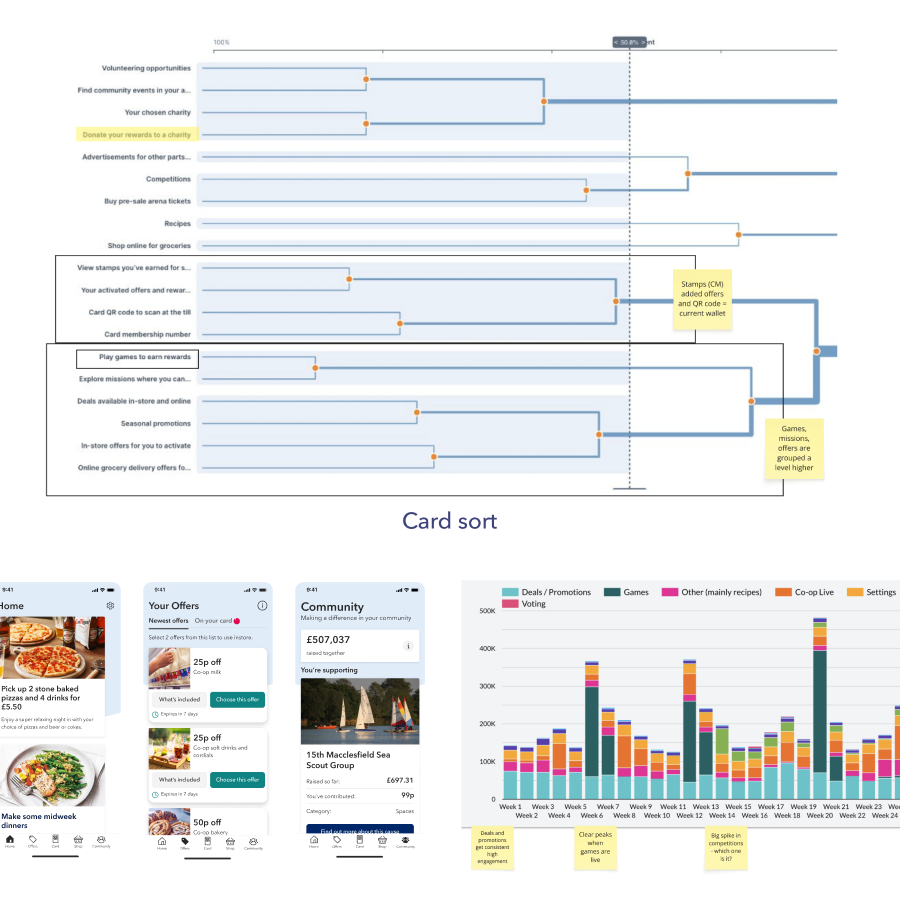
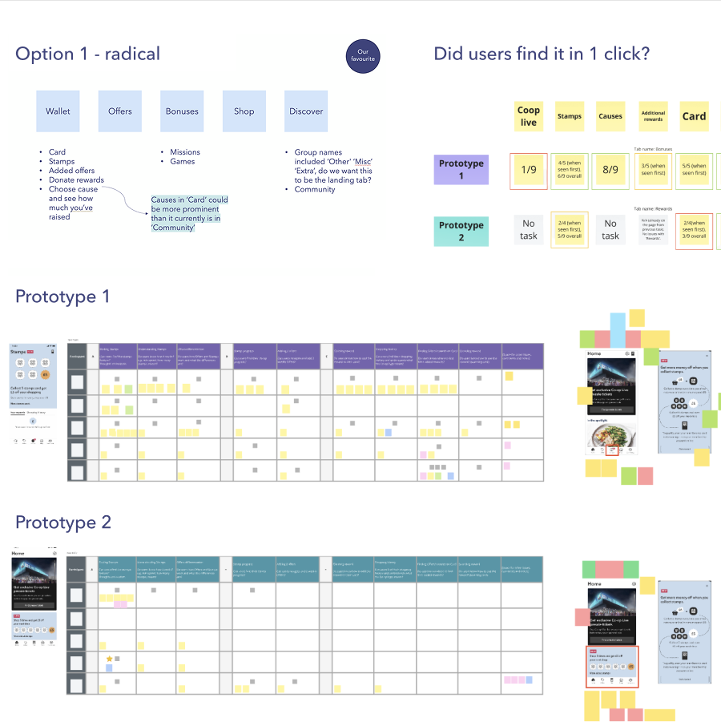
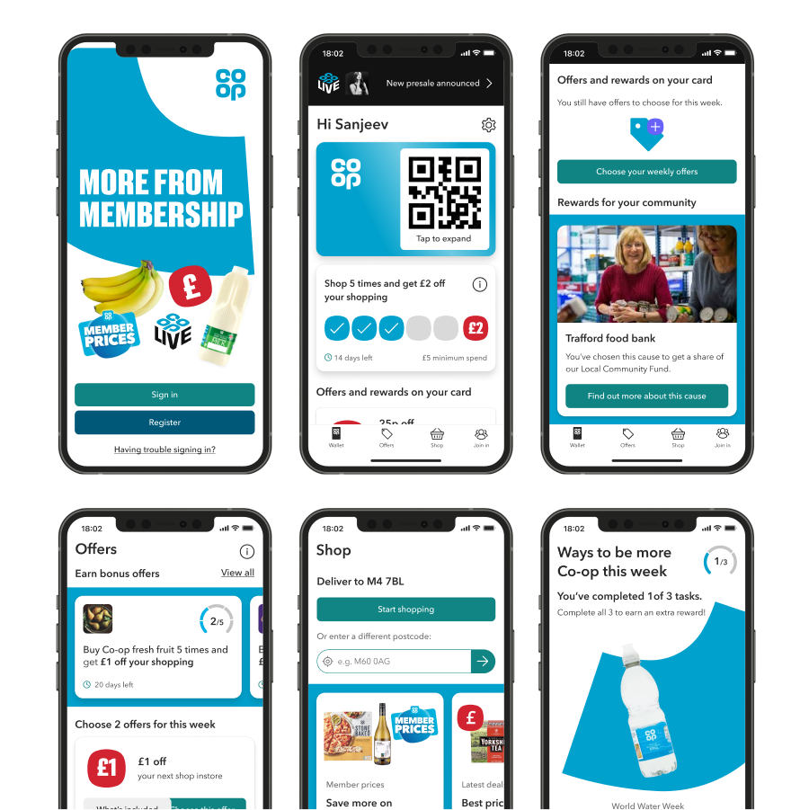

Co-op App IA
Creating a clearer, more scalable information architecture for Co-op Membership.
Background
Membership and its proposition were expanding rapidly. Over five years the app had grown from around 500,000 active users to over 2.7 million, with new features continually being added. Users struggled to find the information they needed, when they needed it.
The challenge was to create an information architecture that balanced customer expectations, key business priorities, and flexibility for future initiatives.

What I did
- Interviewed users, product and stakeholders to identify customer and business needs.
- Analysed app data to uncover the most and least used areas of the app.
- Ran a card sort exercise to see how users naturally grouped existing and future content.
- Created multiple IA models and prototypes, validating them through moderated research.
- Communicated proposed changes and timelines across multiple business areas to build stakeholder buy-in.
- Designed a user-centred IA focused on helping users complete top tasks sooner.

Result
- Delivered a scalable information architecture allowing the new Membership proposition to be integrated with no additional engineering effort.
- Increased consistency across the app with an intuitive end-to-end experience.
- Improved the in-store experience, increasing digital card scans by 12% and boosting second offer selections by 8%.
- Made strategic business initiatives more visible, including choosing a cause and accessing Co-op Live tickets.

